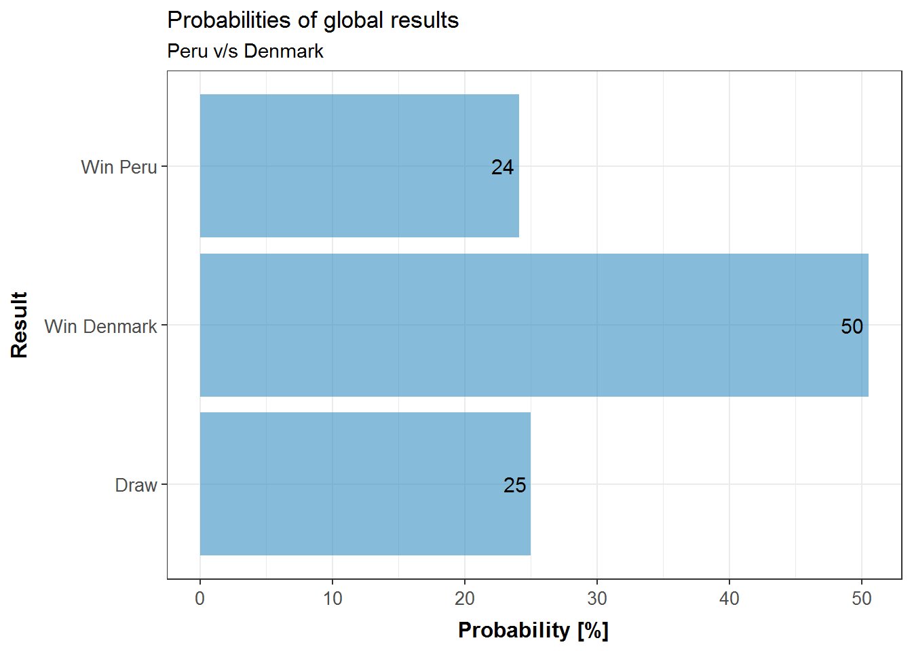

I couldn’t resist doing some data analysis for this new Soccer World Cup in Russia 2018. After searching online for a while and collecting some data I decided to focus on creating a prediction model for “expected goals for each team and each game”, allowing the estimation of probability to win, lose or draw. This way we can predict all games of the tournament.
Now all details about the considered data, model fitting and results are presented.
Considered data
Results of all world cup games between USA 1994 & Brazil 2014
Last FIFA ranking registered for teams at the moment of each world cup
Percent of players who play in the main five European leagues (England, Spain, Italy, Germany and France) at the moment of each world cup compared to their respective complete squads.
Age mean for each squad at the moment of each world cup
Team confederation (UEFA, CONMEBOL, CONCACAF, etc.)
Basic exploration
372 games were considered, whose results indicate that Draw is the less frequent one (24%).:
| Result | Amount | Percent |
|---|---|---|
| Team 1 | 168 | 45.2 |
| Team 2 | 114 | 30.6 |
| Draw | 90 | 24.2 |
Also it is possible to observe the goal distribution of one team by game, with an average of 1.3 goals. Below the histogram of this information is shown:
Prediction model with Poisson distribution
Even though different methods are used for this kind of prediction, one of most used is named “expected goals for one team at one game” which is based on a regression model with Poisson distribution, since that “how many goals are scored in a game” is similar to this distribution.
To do this i used the function glm from R language (and IDE Rstudio) setting all data mentioned before, using the value difference between each feature from 2 teams in each game.
The most relevant feature given by the model was the percent of players in main European leagues, in addition to a general advantage for Conmebol teams. Also the average age and the FIFA ranking have a statistical impact, but not so strong.
It is valuable to mention that features like Local/Away distinction, Soccer world cup hosting, Standard deviation for age of players and Confederations (except Conmebol) were not finally considered.
So, the model allows us to estimate probability for each team to score X goals in a specified game, of course depending on the rival. This way we can calculate the result probability matrix as shown in the next data visualization, considering the first Peruvian game, after 36 years absence from soccer world cups.
Then, considering the total probability for each complete score case (0-0, 0-1, 1-0, 1-1, 2-1, 1-2, 2-2 etc.) we can obtain the total probability for: a)Team 1 win, b) Draw, and c) Team 2 win.
Contradictory, even though the most probable exactly result is 1-1 with 11.9%, if we see the global result the most probable is that Denmark wins (50%), while Draw or Peru wins have 25% probability each. In the next figure these probabilities could be observed:

In order to have some knowledge about the accuracy of the model, i partitioned the data set, doing training and evaluation steps with different samples from the data set, obtaining 54% accuracy. So, 27% from 46% of total error is due to Draws which the model “never predicts“, since we consider that as basic criterion for the most probable global result prediction.
2018 Prediction
Finally, using the model, considering as winner the team with the highest probability to win in each game, it is possible to estimate the final positions table of the tournament, from the champion to the last place:
| Stage | Team |
|---|---|
| Champion | FRANCIA |
| Final | ALEMANIA |
| Semi Final | BRASIL |
| Semi Final | ESPAÑA |
| Round of 8 | PORTUGAL |
| Round of 8 | ARGENTINA |
| Round of 8 | BÉLGICA |
| Round of 8 | INGLATERRA |
| Round of 16 | POLONIA |
| Round of 16 | URUGUAY |
| Round of 16 | SUECIA |
| Round of 16 | EGIPTO |
| Round of 16 | DINAMARCA |
| Round of 16 | CROACIA |
| Round of 16 | SUIZA |
| Round of 16 | SENEGAL |
| Group stage | MARRUECOS |
| Group stage | PERÚ |
| Group stage | ISLANDIA |
| Group stage | SERBIA |
| Group stage | MÉXICO |
| Group stage | TÚNEZ |
| Group stage | COLOMBIA |
| Group stage | ARABIA SAUDI |
| Group stage | NIGERIA |
| Group stage | COSTA RICA |
| Group stage | JAPÓN |
| Group stage | RUSIA |
| Group stage | IRÁN |
| Group stage | AUSTRALIA |
| Group stage | COREA DEL SUR |
| Group stage | PANAMÁ |
By contrast with the different predictions from the last days before the world cup began (MIT, EightyFivePoints, UBS, AchimZeileis), our model says that France will be the new champion. On the other hand, Germany, Brazil and Spain, also were among the best 4 in most of them.
Another difference in this model is that Russia, Peru, Colombia and Mexico wouldn’t overcome group stage, while other models said yes.
We are going to see what will happen. Anyway, it is important to take into account that in global result prediction in soccer there is always a relatively high error margin, since the random nature of this sport, affected also by psychological and emotional components, which are very complex to include into analysis. While the soccer world cup is happening, we will be publishing specific and detailed estimates for each game in addition to historical data. Follow us on Twitter / Facebook.